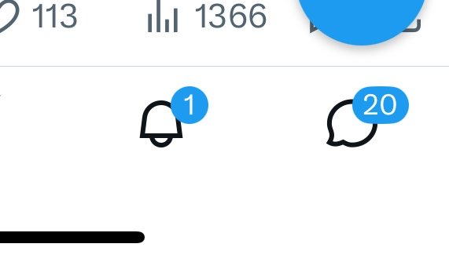

恋爱不知道怎么谈但我知道．
唐三的所有魂技：蓝银皇第一魂技：缠绕，第二魂技：寄生，第三魂技：蛛网束缚，第四魂技：蓝银囚笼，第四魂技：蓝银突刺阵，第五魂技：蓝银霸王枪，第六魂技：虚无，第七魂技：蓝银真身，第八魂技：蓝银邪魔镜之面，第八魂技：蓝银虎鲸魔之摄，第九魂技：蓝银青龙缠之韧，第九魂技：蓝银天青龙之魂。昊天锤第一魂技：大地之力，第一魂技泰坦之锤，第二魂技：定力之破，第三魂技：旋风狂舞，第四魂技：暗魔邪神破，第五魂技：绚烂之爆，第六魂技：千钧蚁皇斩，第七魂技：昊天真身，第八魂技：千钧壁垒，第九魂技：杀戮结界。
昊天九绝震字决，破字诀，杀字决，缠字诀，透字诀，崩字诀，空字决，封字诀，贯字诀，昊天锤的奥义炸环，昊天锤乱披风，昊天锤九九归一，昊天锤乱披风之舞，大须一锤，须弥凌天。
黄金十三戟第一式：无定风波，第二式：千载空悠，第三式：一去不返，第四式：排山倒海，第五式：海天一色，第六式：银海生花，第七式：无风起浪，第八式：沧海一粟，第九式：海枯石烂，第十式：海之阳，第十一式：海神之星，第十二式：百川归海，第十三式：身戟合一斗转星移，十三式合一：海神的黄昏
你说得对，但是 瑞幸咖啡（Luckin Coffee） 是由陆正耀与钱治亚自主研发的一款全新低价打工人续命游戏。游戏在一个被称作 「写字楼地下室」 的幻想世界里，被你注入身体的浓缩咖啡液将被赋予 「生椰拿铁」，导引早八清醒之力。你将扮演一位名叫 「打工人/社畜」 的神秘角色，在自由的9.9元优惠券旅行中遭遇各类口感奇葩的联名新品，和骑手小哥一起击败冰块塞满大半杯的阻碍，找回周一开工不瞌睡的真谛——同时，逐步发掘 「财务造假退市后居然靠生椰拿铁逆风翻盘」 的真相。
唐三的所有魂技：蓝银皇第一魂技：缠绕，第二魂技：寄生，第三魂技：蛛网束缚，第四魂技：蓝银囚笼，第四魂技：蓝银突刺阵，第五魂技：蓝银霸王枪，第六魂技：虚无，第七魂技：蓝银真身，第八魂技：蓝银邪魔镜之面，第八魂技：蓝银虎鲸魔之摄，第九魂技：蓝银青龙缠之韧，第九魂技：蓝银天青龙之魂。昊天锤第一魂技：大地之力，第一魂技泰坦之锤，第二魂技：定力之破，第三魂技：旋风狂舞，第四魂技：暗魔邪神破，第五魂技：绚烂之爆，第六魂技：千钧蚁皇斩，第七魂技：昊天真身，第八魂技：千钧壁垒，第九魂技：杀戮结界。
昊天九绝震字决，破字诀，杀字决，缠字诀，透字诀，崩字诀，空字决，封字诀，贯字诀，昊天锤的奥义炸环，昊天锤乱披风，昊天锤九九归一，昊天锤乱披风之舞，大须一锤，须弥凌天。
黄金十三戟第一式：无定风波，第二式：千载空悠，第三式：一去不返，第四式：排山倒海，第五式：海天一色，第六式：银海生花，第七式：无风起浪，第八式：沧海一粟，第九式：海枯石烂，第十式：海之阳，第十一式：海神之星，第十二式：百川归海，第十三式：身戟合一斗转星移，十三式合一：海神的黄昏
你说得对，但是 瑞幸咖啡（Luckin Coffee） 是由陆正耀与钱治亚自主研发的一款全新低价打工人续命游戏。游戏在一个被称作 「写字楼地下室」 的幻想世界里，被你注入身体的浓缩咖啡液将被赋予 「生椰拿铁」，导引早八清醒之力。你将扮演一位名叫 「打工人/社畜」 的神秘角色，在自由的9.9元优惠券旅行中遭遇各类口感奇葩的联名新品，和骑手小哥一起击败冰块塞满大半杯的阻碍，找回周一开工不瞌睡的真谛——同时，逐步发掘 「财务造假退市后居然靠生椰拿铁逆风翻盘」 的真相。
